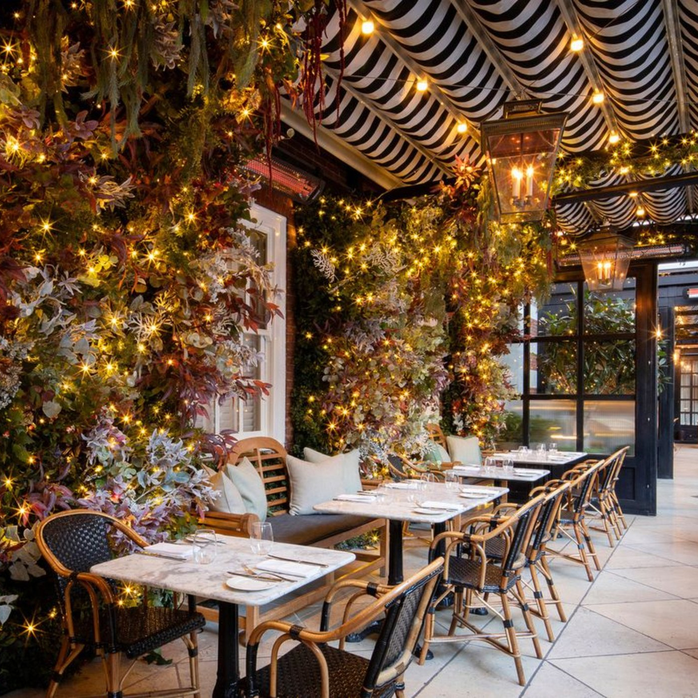

ようこそWelcome👋
I'm Victor and I'm
not a web developer
(yet).
I'm currently a finance 💰 person in London, UK.
Statement
This website is meant to fulfill one of the requirements for admission to the Founders & Coders foundation course.
ITALIAN
FINANCE STUFF
So, let me give you a glimpse into my world: I'm Victor, a finance enthusiast by day and an insatiably curious coding explorer by night. Surprisingly, I'm not a web developer...yet. But hey, we all start somewhere, right? Rest assured, I won't subject you to crashing websites or an overload of glittery unicorns (unless you specifically request it, but I won't judge).

FOODIE STUFF
When I'm not crunching numbers in the vibrant city of London, I embark on a delectable quest to unearth hidden culinary gems. Consider me your friendly neighborhood foodie! If you need restaurant recommendations, I'm your go-to guide for gastronomic delights.
PYTHON DATA SCIENCE / FINANCIAL MODELLING
While I initially veered away from software engineering due to societal pressures, my passion for coding remained unwavering. I'm a self-taught Python enthusiast, continuously honing my skills by crafting nifty scripts and tackling intriguing algorithms. And now, I'm eagerly delving into the captivating realm of web development, immersing myself in the wonders of HTML, CSS, and JavaScript. Building things fills me with immense joy and a profound sense of achievement—it's like playing with digital Legos without the excruciating foot pain.
I have zero experience in web development or programming in general, apart from some self-taught VBA and Python for financial modelling and data science that helped me speed up work for my job.
Here's the honest truth: I've never considered myself a profoundly creative person. My drawing skills could use some improvement, to say the least. However, I possess a keen knack for problem-solving and an imaginative approach that knows no bounds. I'll bend over backward, twist sideways, and perhaps even throw in a subtle dance move to unravel coding conundrums and fashion elegant solutions.
JAPANESE STUFF
Now, here's a little secret about me - I have a hidden passion:
趣味は日本語を勉強することです～
My hobby is studying Japanese
What can I say, I'm a sucker for both programming and natural languages!
I have zero experience in web development or programming in general, apart from some self-taught VBA and Python for financial modelling and data science that helped me speed up work for my job.
So, why am I so eager to join the Founders and Coders foundations programme? It's simple: I yearn to unleash my creativity, explore limitless possibilities, and craft websites and applications that captivate and delight people. The programme offers a remarkable opportunity to refine my skills and collaborate with a diverse community of like-minded individuals. I aim to create unforgettable online experiences that leave a lasting impression, empowering and connecting people through technology.
Game
Believe it or not, the idea for this game came to me in a dream. I'd just started learning HTML/CSS/JS and I noticed how most of the work is done using squares or rectangles, so I thought I would leverage that and create a game based on squares.
I did not follow any tutorials or walkthroughs to build this game.
Key features:
- Targets are randomly generated from the edges of the screen
- Targets are fired towards the target grid, with the angle of the possible trajectories decreasing as the grid decreases in size
- See-through target grid provides an additional visual complication
- Only score a point when the target is within the grid
- Scoring system
- Top score retained in local memory
- Levelling up system. Levelling up results in:
- Change in color palette
- Increased target movement speed
- Reduced target grid size
- User recovers a life if at less than max health
- 1UP animation in case the user has recovered a life
- Fully responsive design covering virtually any device / screen size
It is still not optimised for touch screens, which is something I would like to learn at Founders & Coders!